Applied geoinformatics
The analysis is only half of it. The other half is a working system: a routable network in PostGIS, an application programming interface that never writes, twelve layers published as open standards, and a browser client a planner can actually operate. Four tiers, one compose file, no manual setup step.
Architecture
Desktop GIS does the preprocessing once. The database holds the data and does the analysis in place. GeoServer publishes it over open standards. The browser consumes it. Nothing in a tier above reaches past the interface of the tier below, so GeoServer could be swapped for another server, or the React client for a different one, without touching the analysis.
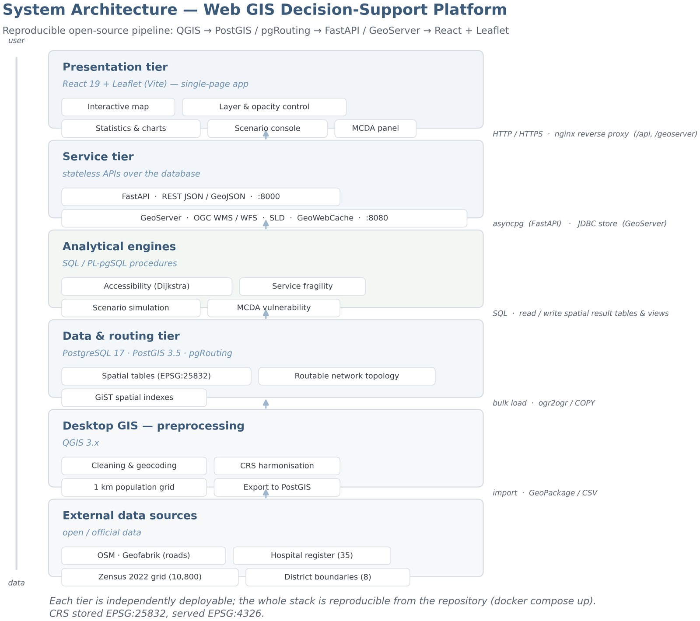
Data tier
Common table expressions and window functions over a stored travel time matrix, executed in PostgreSQL rather than pulled into a script. That matters for a decision support tool: the platform serves exactly the rows the analysis produced, so the map and the thesis cannot drift apart.
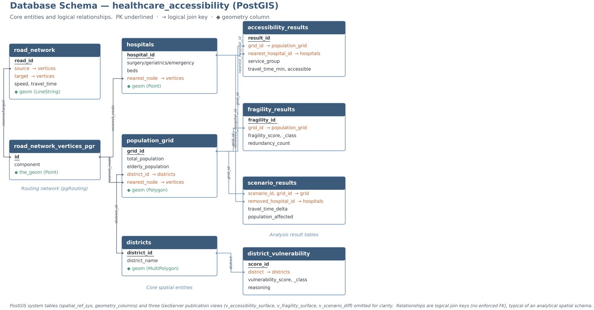
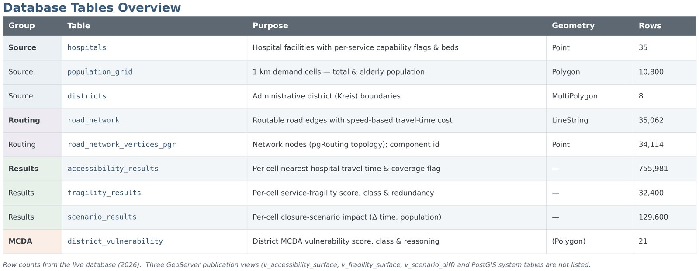
Routing
OpenStreetMap roads become a routable graph with pgRouting: 35,062 segments, 11,156 km, 34,114 junctions. Speeds are assigned per road class, then every populated cell is routed to every hospital with a many to many Dijkstra.
Connectivity was checked rather than taken on trust. The graph splits into 212 components; the largest holds 31,335 junctions, and no hospital and no populated cell falls outside it. A routing graph that is silently disconnected produces confident nonsense, so this check runs before any travel time is computed.
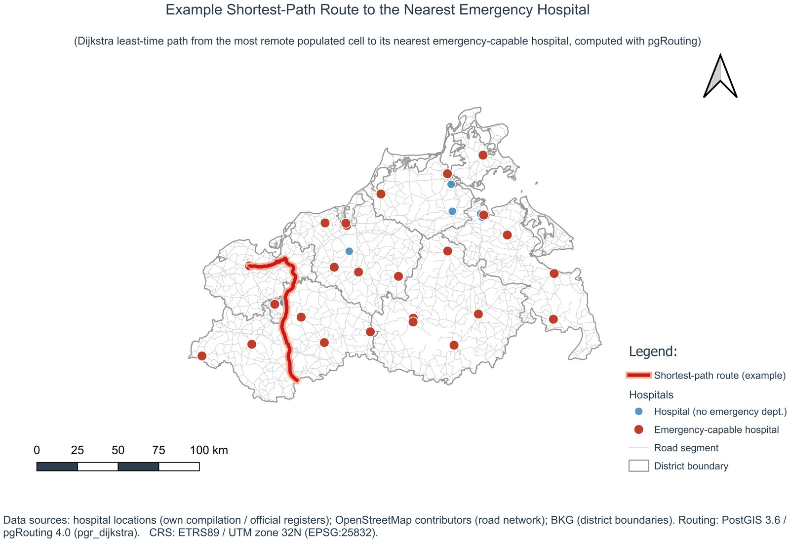
Service tier
FastAPI, async throughout, pooled with asyncpg. Nine endpoints plus a WebSocket channel for long operations. Two decisions shape it:
ST_AsGeoJSON and json_build_object do the work, so a whole surface is one round trip and no geometry is ever reshaped in Python.gis_readonly, a login that can connect and select and nothing else. No endpoint writes. Closure scenarios are derived offline from the stored matrix and served from a results table, so simulating a hospital closure never mutates the baseline.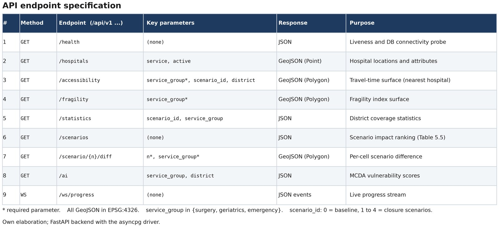
Interoperability
GeoServer publishes 12 layers as Web Map Service and Web Feature Service: 10 defined by a SQL view, plus the hospital and district layers read straight from their tables. Each layer is defined by a SQL view kept in the repository rather than configured by hand in a web form, so the publication is reproducible. Styling travels with the layer as a Styled Layer Descriptor, versioned in the repository beside the queries, so a layer renders identically wherever it is served and a change to a class break shows up in a diff. Native geometry is EPSG:25832 and GeoServer reprojects to EPSG:4326 on the way out.
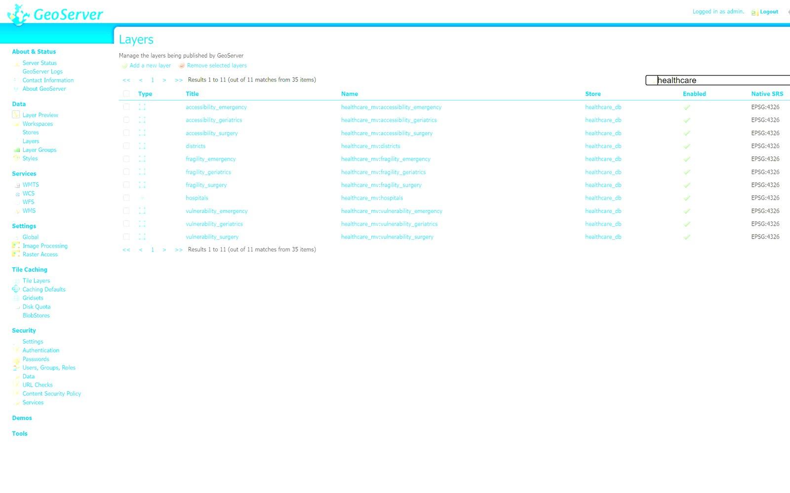
The test of an open standard is whether something other than your own client can read it. These layers load straight into QGIS over the network, with their server side styling intact and no export step.
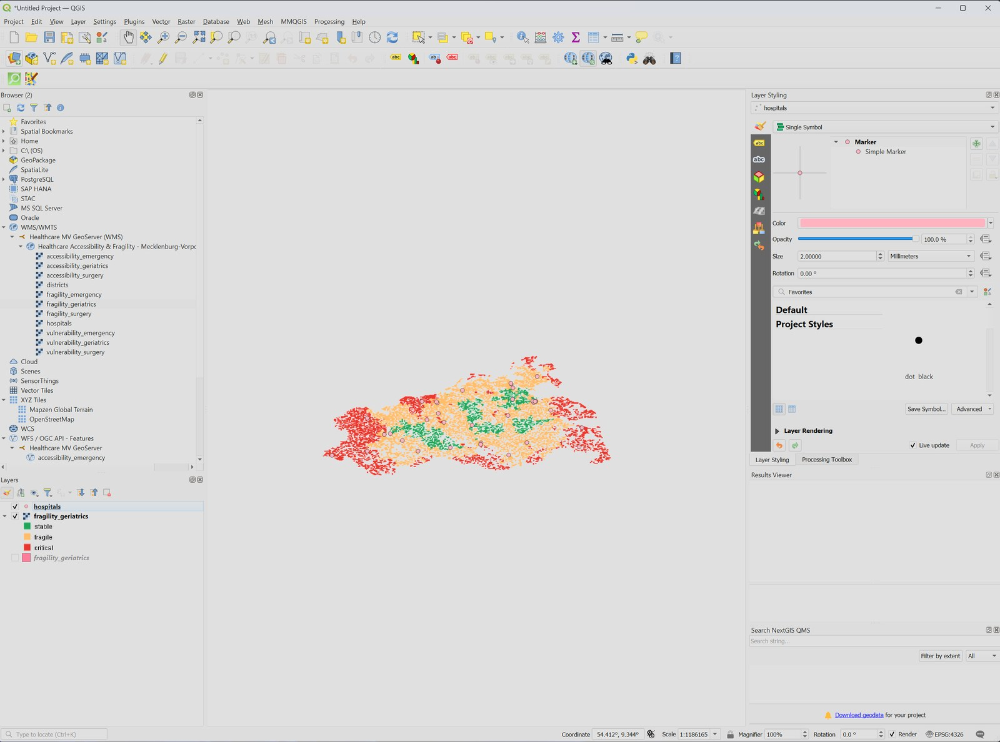
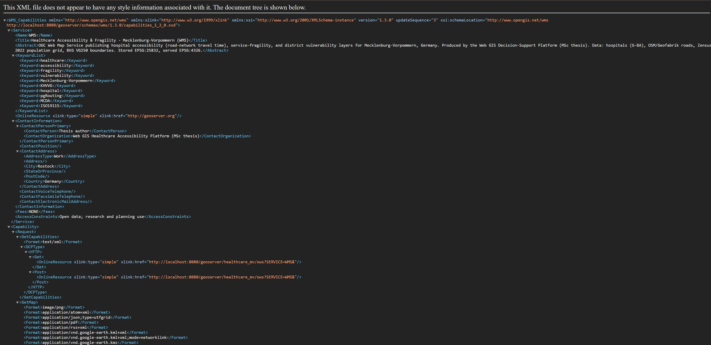
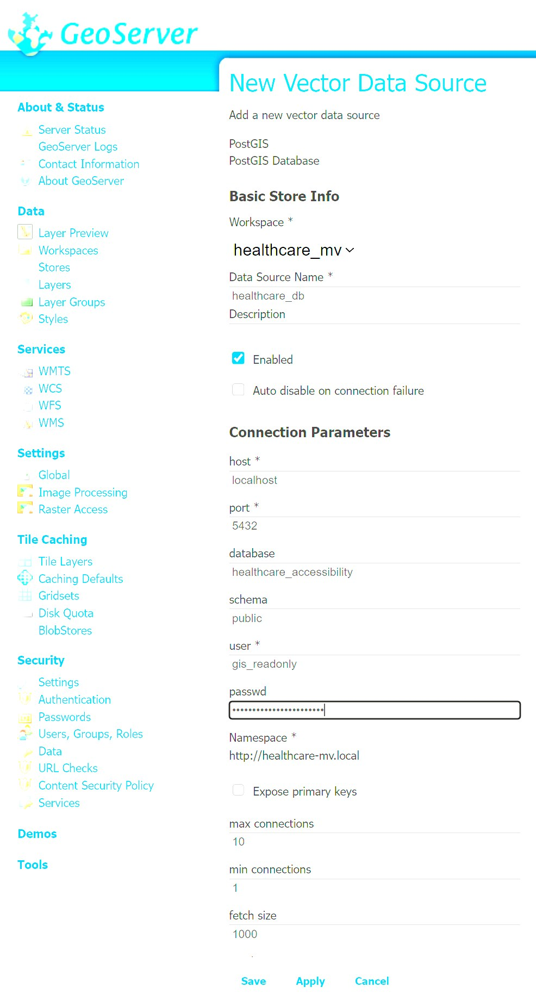
gis_readonly, not as a superuser, so a misconfigured layer cannot alter the data behind it.Presentation tier
React 19 built with Vite, Leaflet for the map. Raster surfaces arrive as Web Map Service tiles from GeoServer; statistics, scenarios and cell queries come from the application programming interface. The sidebar switches service group, toggles each layer, sets opacity and swaps the basemap. Panels on the right carry coverage totals, coverage by district, a covered against uncovered breakdown, the scenario console and the multi criteria vulnerability ranking.
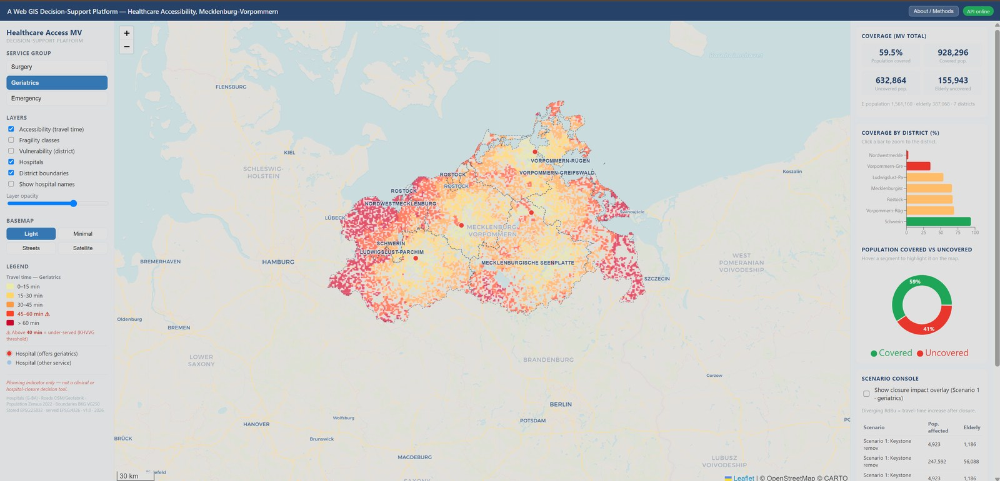
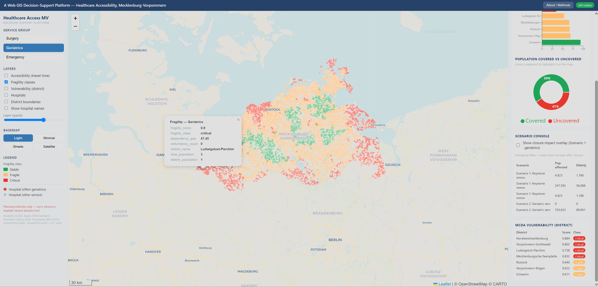
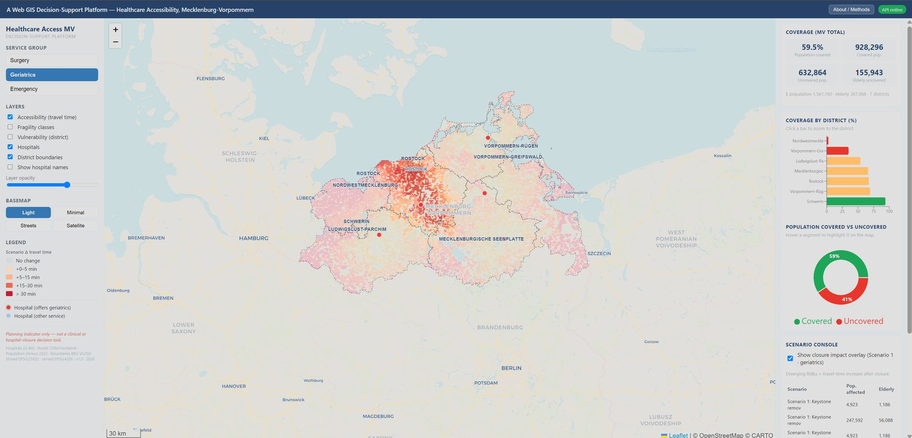
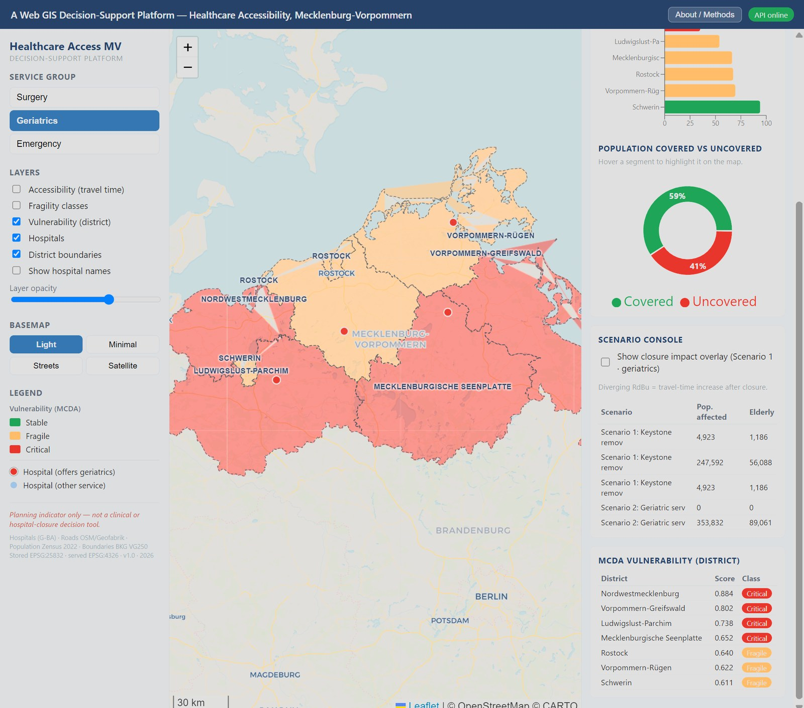
Deployment
nginx serves the built client and proxies /api and /geoserver, so the browser sees a single origin and there is no cross origin configuration to get wrong. The database keeps its data in a named volume, GeoServer its workspace and styles in another. Secrets come from the environment and are never committed; the repository ships an example file and a bootstrap that creates the least privilege role on first start.
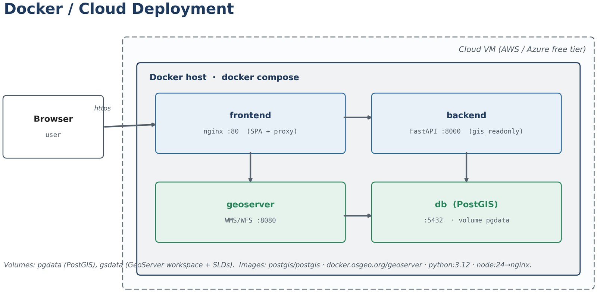
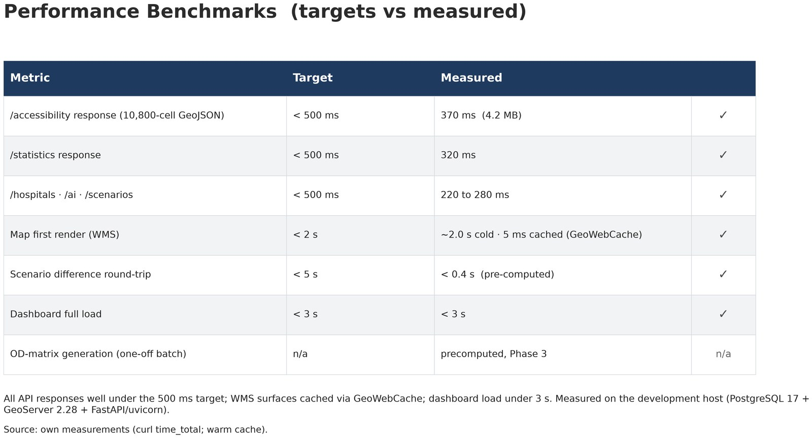